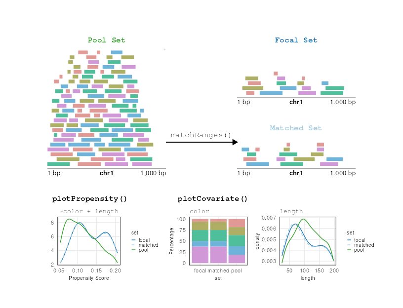

vignettes/matching_granges.Rmd
matching_granges.RmdIn this vignette we demonstrate generating covariate-matched, null-hypothesis GRanges using the matchRanges() function to test for the occupancy of CCCTC-binding factor (CTCF) at chromatin loop anchors.
One of the fundamental principles of chromatin-looping suggests that most loops are bound at both ends by the CTCF transcription factor (TF). CTCF-bound loops can be formed by loop-extrusion, where the ring-like cohesin complex extrudes chromatin until stopped by bound CTCF. By this mechanism, we expect most loop anchors will be bound by CTCF.
While we could test this hypothesis by simple overlap or permutation testing, these approaches fail to account for non-uniformly distributed covariate genomic features. For example, loop anchors are commonly bound by CTCF and located in open chromatin regions. We can use matchRanges() to test for CTCF occupancy at loop anchors controlling for open chromatin regions.
Here, we generate a set of null-hypothesis GRanges to more rigorously test CTCF occupancy at loop anchors independently from open chromatin regions. We use the hg19_10kb_bins dataset from the nullrangesData package, which contains ranges for every 10Kb bin along the genome with CTCF, DNase, and loop feature annotations from GM12878 (see ?nullrangesData::hg19_10kb_bins).

matchRanges()
Before we generate our null ranges, let’s take a look at our example dataset:
library(nullrangesData)
## Load example data
bins <- hg19_10kb_bins()
binsmatchRanges() works by selecting a set of covariate-matched controls from a pool of options based on an input focal set of interest. Here, we define focal as bins that contain a loop anchor, pool as bins that don’t contain a loop anchor, and covar as DNase signal and number of DNase sites per bin:
library(nullranges)
## Match ranges
set.seed(123)
mgr <- matchRanges(focal = bins[bins$looped],
pool = bins[!bins$looped],
covar = ~dnaseSignal + n_dnase_sites)
mgrWhen the focal and pool arguments are GRanges objects, matchRanges() returns a MatchedGRanges object. The MatchedGRanges class extends GRanges, so all of the same operations can be applied:
library(GenomicRanges)
library(plyranges)
library(ggplot2)
## Summarize ctcfSignal by n_ctcf_sites
mgr %>%
group_by(n_ctcf_sites) %>%
summarize(ctcfSignal = mean(ctcfSignal)) %>%
as.data.frame() %>%
ggplot(aes(x = n_ctcf_sites, y = ctcfSignal)) +
geom_line() +
geom_point(shape = 21, stroke = 1, fill = 'white') +
theme_minimal() +
theme(panel.border = element_rect(color = 'black',
fill = NA))Here, we utilize the plyranges package which provides a set of “tidy” verbs for manipulating genomic ranges for a seamless and integrated genomic analysis workflow.
We can get a quick summary of the matching quality with overview():
overview(mgr)For continuous covariates (such as dnaseSignal), overview() shows the mean and standard deviation between each matched set. For categorical covariates, such as n_dnase_sites, overview() reports the number of observations per category and matched set. The bottom section shows the mean and s.d (or n, for factors) difference between focal and matched sets.
overview() also summarizes the propensity scores for each set to give a quick idea of overall matching quality.
Let’s visualize overall matching quality by plotting propensity scores for the focal, pool, and matched sets:
plotPropensity(mgr, sets = c('f', 'p', 'm'), type = 'ridges')From this plot, it is clear that the matched set is much closer to the focal set than the pool set.
We can ensure that covariate distributions have been matched appropriately by using the covariates() function to extract matched covariates along with patchwork and plotCovarite to visualize all distributions:
Using our matched ranges, we can compare CTCF occupancy in bins that 1) contain a loop anchor (i.e. looped), 2) don’t contain a loop anchor (i.e. unlooped), or 3) don’t contain a loop anchor, but are also matched for the strength and number of DNase sites (i.e. matched). In this case, we calculate CTCF occupancy as the percent of bins that contain CTCF among our 3 sets by using the focal() and pool() accessor functions:
## Percent of bins with CTCF
g1 <- (sum(focal(mgr)$n_ctcf_sites >= 1) / length(focal(mgr))) * 100
g2 <- (sum(pool(mgr)$n_ctcf_sites >= 1) / length(pool(mgr))) * 100
g3 <- (sum(mgr$n_ctcf_sites >= 1) / length(mgr)) * 100
## Visualize
barplot(height = c(g1, g2, g3),
names = c('looped\n(focal)', 'unlooped\n(pool)', 'unlooped\n(matched)'),
ylab = "CTCF occupied bins (%)",
col = c('#1F78B4', '#33A02C', '#A6CEE3'),
main = 'CTCF occupancy',
border = NA,
las = 1)## R version 4.1.1 (2021-08-10)
## Platform: x86_64-pc-linux-gnu (64-bit)
## Running under: Ubuntu 20.04.3 LTS
##
## Matrix products: default
## BLAS/LAPACK: /usr/lib/x86_64-linux-gnu/openblas-pthread/libopenblasp-r0.3.8.so
##
## locale:
## [1] LC_CTYPE=en_US.UTF-8 LC_NUMERIC=C
## [3] LC_TIME=en_US.UTF-8 LC_COLLATE=en_US.UTF-8
## [5] LC_MONETARY=en_US.UTF-8 LC_MESSAGES=C
## [7] LC_PAPER=en_US.UTF-8 LC_NAME=C
## [9] LC_ADDRESS=C LC_TELEPHONE=C
## [11] LC_MEASUREMENT=en_US.UTF-8 LC_IDENTIFICATION=C
##
## attached base packages:
## [1] grid parallel stats4 stats graphics grDevices utils
## [8] datasets methods base
##
## other attached packages:
## [1] ggplot2_3.3.5 plotgardener_0.99.13 nullranges_0.99.1
## [4] GenomicRanges_1.44.0 GenomeInfoDb_1.28.4 IRanges_2.26.0
## [7] S4Vectors_0.30.2 BiocGenerics_0.38.0
##
## loaded via a namespace (and not attached):
## [1] bitops_1.0-7 matrixStats_0.61.0
## [3] fs_1.5.0 RColorBrewer_1.1-2
## [5] rprojroot_2.0.2 InteractionSet_1.20.0
## [7] tools_4.1.1 bslib_0.3.0
## [9] utf8_1.2.2 R6_2.5.1
## [11] KernSmooth_2.23-20 DBI_1.1.1
## [13] colorspace_2.0-2 withr_2.4.2
## [15] tidyselect_1.1.1 curl_4.3.2
## [17] compiler_4.1.1 textshaping_0.3.5
## [19] Biobase_2.52.0 desc_1.4.0
## [21] DelayedArray_0.18.0 labeling_0.4.2
## [23] rtracklayer_1.52.1 sass_0.4.0
## [25] scales_1.1.1 mvtnorm_1.1-2
## [27] ggridges_0.5.3 pkgdown_1.6.1
## [29] speedglm_0.3-3 yulab.utils_0.0.2
## [31] systemfonts_1.0.2 stringr_1.4.0
## [33] digest_0.6.28 Rsamtools_2.8.0
## [35] rmarkdown_2.11 XVector_0.32.0
## [37] pkgconfig_2.0.3 htmltools_0.5.2
## [39] MatrixGenerics_1.4.3 highr_0.9
## [41] fastmap_1.1.0 rlang_0.4.11
## [43] farver_2.1.0 gridGraphics_0.5-1
## [45] jquerylib_0.1.4 BiocIO_1.2.0
## [47] generics_0.1.0 jsonlite_1.7.2
## [49] mclust_5.4.7 BiocParallel_1.26.2
## [51] dplyr_1.0.7 RCurl_1.98-1.5
## [53] magrittr_2.0.1 ggplotify_0.1.0
## [55] GenomeInfoDbData_1.2.6 Matrix_1.3-4
## [57] Rcpp_1.0.7 munsell_0.5.0
## [59] fansi_0.5.0 lifecycle_1.0.1
## [61] stringi_1.7.4 yaml_2.2.1
## [63] MASS_7.3-54 SummarizedExperiment_1.22.0
## [65] zlibbioc_1.38.0 plyr_1.8.6
## [67] crayon_1.4.1 lattice_0.20-45
## [69] Biostrings_2.60.2 knitr_1.36
## [71] pillar_1.6.3 rjson_0.2.20
## [73] strawr_0.0.9 XML_3.99-0.8
## [75] glue_1.4.2 evaluate_0.14
## [77] data.table_1.14.2 vctrs_0.3.8
## [79] gtable_0.3.0 purrr_0.3.4
## [81] assertthat_0.2.1 ks_1.13.2
## [83] cachem_1.0.6 xfun_0.26
## [85] restfulr_0.0.13 pracma_2.3.3
## [87] ragg_1.1.3 tibble_3.1.5
## [89] GenomicAlignments_1.28.0 plyranges_1.12.1
## [91] memoise_2.0.0 ellipsis_0.3.2